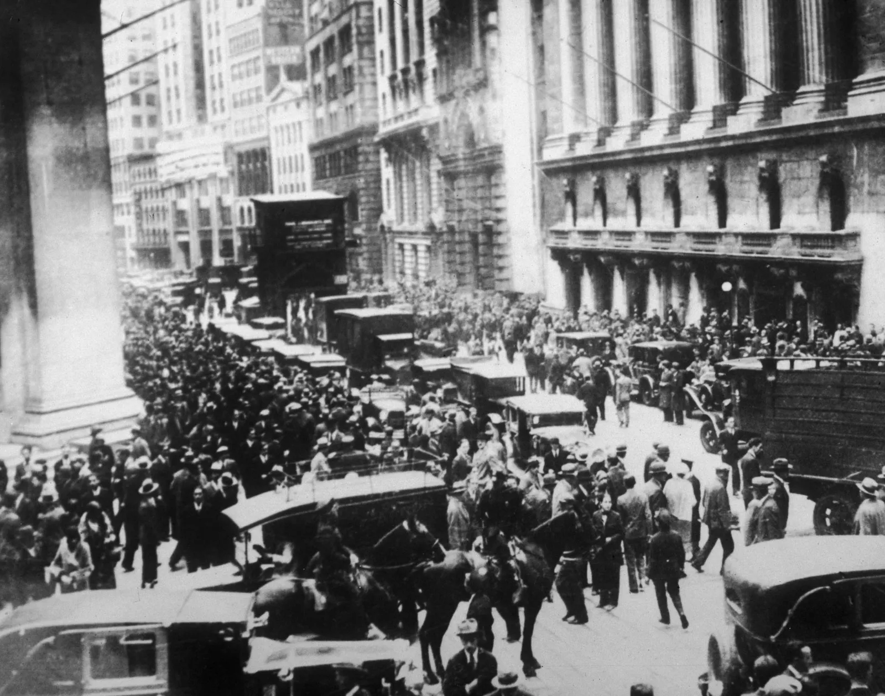

When talking about stocks and the stock market in general, you'll very likely hear the topic "1929 crash" come up often.
Its an intresting topic to tackle as it was the most devastating stock market crash in the history of western countries especially the United States.
On this page of the website, i will explain to you what was the 1929, what caused it, how it happened and what we learned from the worst economic donwturn in history.

The Stock Market Crash of 1929, also known as the Great Crash or the Wall Street Crash, happened on October 29, 1929 and it was the most devastating stock market crash in the history of the United States. Many people say it was the element that marked the beginning of the 10 year great depression that affected all Western countries. Many investors also including banks lost a unbelievable amount of money as stock prices dropped downhill. The crash led to widespread buisness failures and a decline in consumer spending, which contributed to the economic downturn.
There were numerous facotrs that contributed, and at the end caused this catastrophie. Some examples are economic equality, there was a huge gap between the lower class and the first class but also a small group of wealthy individuals and companies controlling a big percentage of the country's economy and wealth. Another factor would be overproduction, the rise of mass production in the 1920s led to an oversupply of goods and a decline in consumer demand. Despite some of these factors that contributed to the crash, the biggest one in my opinion is still the market speculation. Essentially many investors were buying stocks on margin which means they were borrowing money from banks to buy shares in hope of making profit and to pay the bank back afterwards. This led to an inflated stock market and speculation that was not based on the underlying value of companies. This is also what resulted in banks closing and groups of people flooding the banks outside wanting to enter.
The lessons learned from the Stock Market Crash of 1929 and the Great Depression continue to shape economic policy and inform our understanding of the economy to this day.
We learned the need for economic stability for example. The great depression showed the importance of maintaning economic stability and avoiding extreme boom and busts.
The federal reserve and other banks have also implenmented new policies to support stability and prevent future potential accidents.
We learned the dangers of inequality in the economy so there are polices made to divide wealth more evenly, but even the gouverment cannot stop this factor because even
at the end of the day when every middle class individual recieve a equal amount of money, they buy things in their daily life and that money goes the the coorporations and the riches.
The most important lesson is that stocks arent a guarantee money growth method. Back in the 1920s majority of people werent educated in this topic and thought it was a simple
method to make quick and efficient cash, but as the crash happened, it showed that only a small percentile of the population survived the crash or tanked it well.